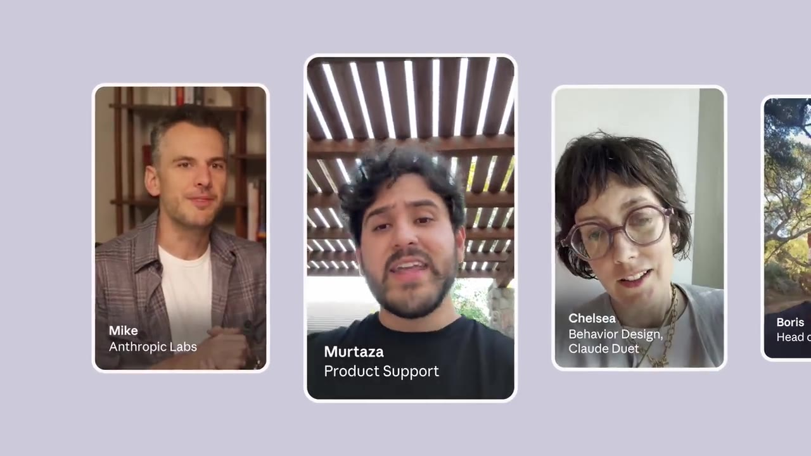

Introducing Claude Duet
▶ 원본 영상 보기한눈에 보기
- Claude Duet은 사용자가 챙겨야 할 일을 Claude가 먼저 알려 주고, 사용자가 휴대폰을 내려놓은 뒤에도 일을 계속하는 새 앱입니다.
- 지금 사용자가 볼 일과 나중에 봐도 되는 일을 Claude가 직접 나누고, 사용자 대신 무언가를 하기 전에는 먼저 확인을 받습니다.
- 사용자 후기에서는 맥락을 이해하는 능력, 필요한 정보만 골라 주는 능력, Slack에서 알아야 할 내용을 먼저 가져다주는 기능을 좋게 평가했습니다.
- 지금은 리서치 프리뷰(정식 출시 전 시험판) 단계이고, 미국의 Pro·Max 구독자만 대기자 명단에 신청할 수 있습니다.
이런 분께 도움이 됩니다
- Slack처럼 메시지가 많이 쌓이는 업무 도구를 쓰면서 중요한 것만 골라 받고 싶은 직장인
- 휴대폰으로 Claude를 자주 쓰고, 대신 일해 주는 비서형 AI가 궁금한 분
- 미국에서 Claude Pro·Max를 구독 중이라 바로 신청할 수 있는 분
핵심 내용
Claude Duet이란 (영상 설명 기준)
영상 설명에 나온 Claude Duet의 특징은 세 가지입니다.
| 특징 | 내용 |
|---|---|
| 먼저 알려 줌 | 사용자가 챙겨야 할 일을 Claude가 먼저 가져옴 |
| 계속 일함 | 사용자가 휴대폰을 내려놓은 뒤에도 작업을 이어 감 |
| 우선순위 판단 + 확인 | 지금 볼 일과 나중에 볼 일을 직접 나누고, 사용자 대신 행동하기 전에는 먼저 물어봄 |
💡 사용자가 묻기를 기다리는 챗봇이 아니라, 먼저 움직이되 중요한 행동은 허락을 받는 비서에 가깝습니다.
자막은 1:01부터만 있습니다. 그 전 부분은 말이 없는 시연 화면이거나 자막을 받지 못한 구간으로 보입니다(자막상 불분명). 앱 화면이 어떻게 생겼는지는 자막으로 확인할 수 없습니다.
실제 사용 후기 (1:01)
- 개발 쪽 발언: Opus 5.5를 써 보면 언제 먼저 나설지, 사용자를 대신해 어떻게 움직일지에 대한 판단력이 분명히 보인다고 합니다.
- 사용자 후기:
- 맥락을 파악하는 능력이 "정말 최고"였다고 합니다.
- 자기에게 필요한 정보와 필요 없는 정보를 잘 구분한다고 합니다.
- Slack에서 알아야 할 내용을 알아서 먼저 가져와 준다고 합니다. 영상에 나온 서비스 연동 사례는 이것 하나입니다.

💡 이 앱의 핵심은 기능의 개수가 아니라 판단력, 즉 무엇을 보여 주고 무엇을 미룰지 고르는 능력입니다.
마무리 메시지 (1:23)
- "요즘 휴대폰에서 Claude를 쓰는 방식이 딱 이렇다"며 직접 써 보고 의견을 들려 달라는 말로 끝납니다.
따라 해보기
준비물
- Claude Pro 또는 Max 구독 (미국 사용자만 해당)
- 비용: 구독료 외에 추가 비용이 있는지는 영상에 나오지 않음
- 소요 시간: 대기자 신청만 하면 몇 분 (보충)
단계별 방법
🔁 Claude Duet 대기자 신청 순서
- 자격 확인
- 신청 페이지 접속
- 대기자 신청
- 안내 읽기
- 1자격 확인
내 Claude 계정이 Pro 또는 Max 요금제인지, 내가 미국에 있는지 확인합니다.
- 2신청 페이지 접속
영상 설명란의 대기자 신청 링크로 들어갑니다.
- 3대기자 신청
페이지 안내에 따라 신청합니다. 신청 화면은 영상에서 생략됨
- 4안내 읽기
자세한 기능은 설명란의 소개 글에서 확인합니다.
2단계 신청 링크
https://claude.com/claude-duet
4단계 소개 글
https://claude.com/resources/articles/claude-duet
따라 할 수 있는지 점검
- ✅ 바로 따라 할 수 있음: 1단계 「자격 확인」, 2단계 「신청 페이지 접속」, 4단계 「안내 읽기」
- ⚠️ 3단계 「대기자 신청」: 신청 화면과 입력할 내용이 영상에 나오지 않습니다. 신청 페이지에 들어가 Claude 계정으로 로그인했을 때 나오는 안내를 따르세요(보충).
- ⚠️ 이용 조건: 미국의 Pro·Max 구독자가 아니면 신청할 수 없습니다. 다른 나라에 언제 열리는지는 영상에 나오지 않습니다.
- ❓ 신청 뒤 실제로 쓸 수 있을 때까지 얼마나 걸리는지, 어떤 OS를 지원하는지, Slack 말고 어떤 서비스와 연결되는지는 영상에 없으니 소개 글에서 확인이 필요합니다.
확인 방법
- 신청 페이지에서 접수 완료 안내가 나오는지 봅니다. 이용할 수 있게 되면 어떻게 알려 주는지는 영상에 나오지 않습니다.
기억할 숫자·인용
- 바탕 모델: Opus 5.5
- 공개 범위: 리서치 프리뷰, 미국 Pro·Max 구독자 대상 대기자 신청
- "Slack에서 제가 알아야 할 내용을 알아서 선제적으로 가져와 주니까요."
- "요즘 제가 휴대폰에서 Claude를 사용하는 방식이 딱 이렇거든요."
생각해볼 점
- 영상의 평가는 회사가 만든 홍보 영상 속 사용자 후기입니다. 중요한 일을 놓치지 않는지, 알림이 너무 많지 않은지는 직접 써 봐야 알 수 있습니다.
- 앱이 사용자를 대신해 행동하려면 Slack 같은 업무 계정에 접근해야 합니다. 어떤 권한을 주게 되는지, 회사 보안 정책에 맞는지는 소개 글에서 확인하는 것이 좋습니다(내 의견).
- 영상에 나온 연동 사례는 Slack 하나뿐입니다. 메일, 일정 등 다른 서비스도 지원하는지는 영상만으로는 알 수 없습니다.
바로 해볼 일
- 내 Claude 요금제가 Pro 또는 Max인지 확인하기
- 소개 글(claude.com/resources/articles/claude-duet)을 읽고 지원하는 연동 서비스와 필요한 권한 확인하기
- 미국 Pro·Max 사용자라면 claude.com/claude-duet 에서 대기자 신청하기